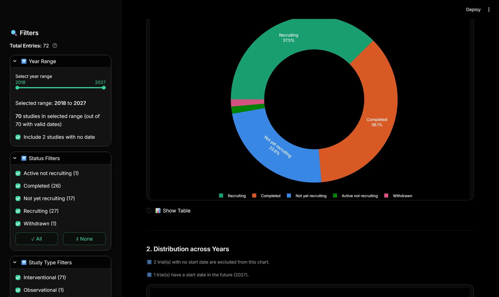
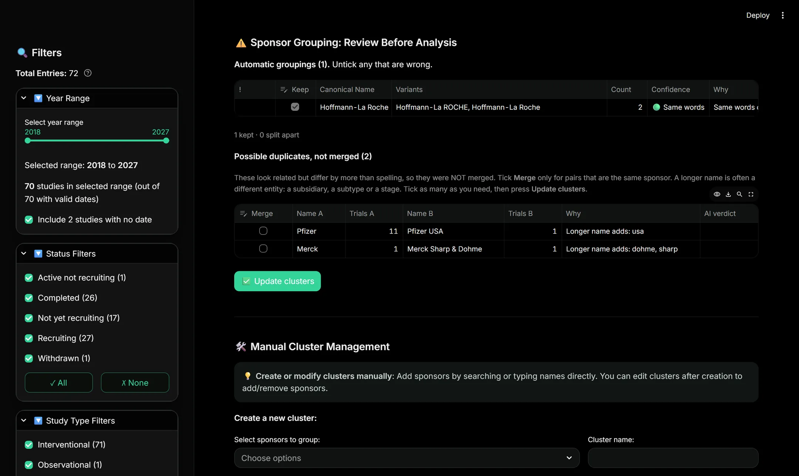
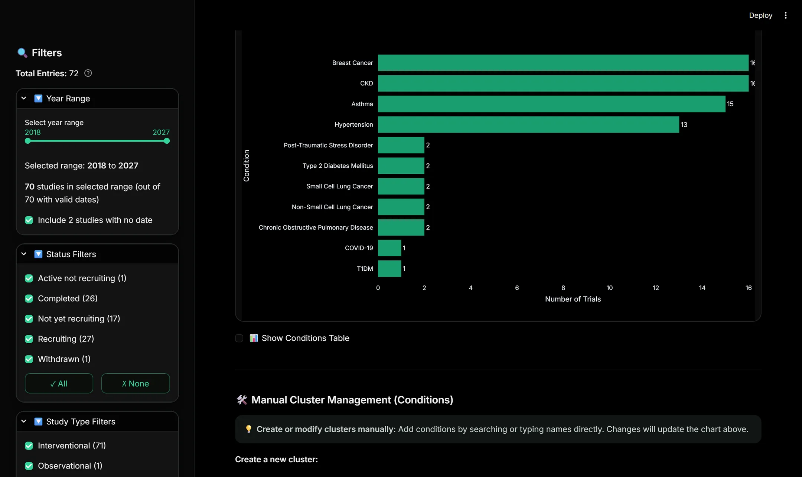
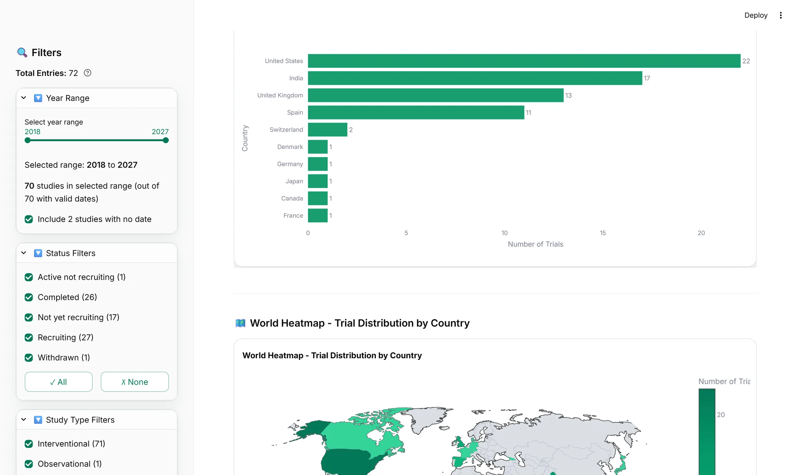

Only when it is certain
Names merge on their own only when they are identical once case, punctuation and company suffixes are stripped, or when they contain exactly the same words.
Upload a CSV export from ClinicalTrials.gov and get the whole dataset broken down: phases, status, study design, who is enrolled, where the sites are, and who is running them. The hard part is not the charts. It is counting the names correctly.
No sign-up. Sample data is one click. Nothing you upload is stored.

The hard part
In trial data one sponsor appears as Pfizer, Pfizer Inc
and PFIZER. One condition appears as NSCLC and
Non-Small Cell Lung Cancer. Count them as written and every
total is wrong.
Names merge on their own only when they are identical once case, punctuation and company suffixes are stripped, or when they contain exactly the same words.
Anything that merely looks similar is listed as a possible duplicate. You tick the ones you agree with. Nothing happens until you say so.
Turn it on and a model judges the doubtful pairs, reporting its own confidence. Every merge it makes is flagged for review. With no answer, nothing merges.

As text, Type 1 Diabetes and Type 2 Diabetes are
over 90% identical. So are Hepatitis B and Hepatitis C.
Any tool that merges on character similarity will eventually fuse two
different diseases and never tell you. This one refuses to use similarity
as evidence of sameness, only as a reason to ask.
The rest are not lost. They are offered to you as possible duplicates. The benchmark fails the build if a single wrong merge ever appears.
Inside it
Overview, study, patients, geography and sponsors. The filters apply across all of them, and every table on every tab exports as CSV.

